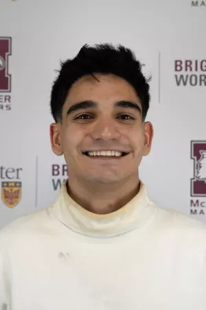

Danial Lariei
Education
Maple High School, Maple, Ontario - Class of 2021
McMaster University, Hamilton, Ontario - Expected Dec 2025
Bachelor of Technology in Automation Engineering, Minor in Business Management
Work Experience
- Sales and Technical Coordinator - CanaControl Automation Inc (Sep 2024 - Present)
- Represented CanaControl at international trade exhibitions (ACHEMA, SPS), engaging with over 30
suppliers and clients leading to new partnerships and automation solutions insights.
- Delivered technical insights and promoted IoT and Industry 4.0 technologies to potential clients.
- Conducted market research to align business strategies for the $3.5bn Canadian market.
- Project Coordinator, Technology - Plan
Group (Jan - Sep 2024)
- Led coordination across AV, Networking, Electrical, and Mechanical teams on high-stakes P3 projects,
achieving client satisfaction by delivering a fully integrated design and estimations.
- Developed Python/VBA scripts, reducing operational overhead by 60%.
- Managed AV maintenance at Corner Brook Acute Care Hospital.
- Maintenance Service Representative - Canadian Student Living (Aug 2022 - Dec 2023)
- Completed 100+ minor work orders such as replacing faucets, filters, light bulbs, silicone seals,
along with installation programming of padlocks, sliding doors, blinds, kitchen sinks, cabinets,
etc.
- Assisted with 200+ move-ins, move-outs, and room changes, ensuring a smooth and efficient process.
- Managed key distribution and maintenance requests, responding to emergencies and maintenance issues
in a timely manner.
- Trained new employees and provided ongoing support to team members, demonstrating strong leadership
and interpersonal skills.
Projects
- Arduino Robot Arm with Smartphone Control | SolidWorks, Arduino, C++, Electronics | (Aug
2023)
- Designed and built a functional Arduino-powered robot arm controlled via a custom Android app.
- Developed and integrated a wireless control system using an HC-05 Bluetooth module, enhancing
usability.
- Assembled and programmed servo-driven robotic components, including a gripper mechanism.
- Successfully implemented smartphone control, showcasing advanced mechatronics and IoT integration.
- Smart Alarm Clock IoT | Arduino, C++, MQTT, LabVIEW | (Nov 2024)
- Developed a smart alarm clock integrating sensors and actuators for interactive alarm and snooze
features.
- Programmed a buzzer and servo motor for tactile alarm feedback, enhancing user interaction.
- Enabled cloud connectivity using MQTT to track user behavior and visualize data trends over 30 days.
Skills
Languages: PLC, Python, C++, C, VBA, JavaScript, HTML, CSS
Developer Tools: RSLogix5000, Arduino, Enterprise Architect, MATLAB, LabView
Mechanical Design: Fusion 360, SolidWorks, AutoCAD
Networking: MQTT, DeviceNet, Ethernet IP, TCP/IP, PROFIBUS, EtherCAT
Data Analysis: Minitab, Microsoft Excel, Python
Hobbies
- Hobbies - Sports, Electronics, Stock Analysis.
- Intrests - Automation projects, passion for developing smart IoT solutions.
- Professional Associations - Ontario University Athletics, Member of McMaster's Varsity Fencing
team.
- Clubs - Vice-President of Finance for AIMED (Artificial Inteligence in Medicine Student Society).